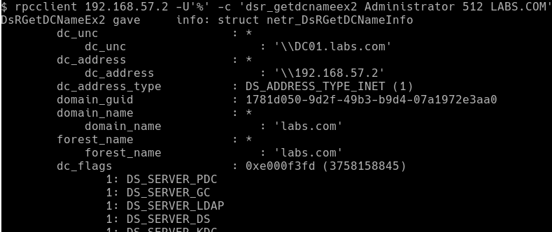

DsrGetDcNameEx The DsrGetDcNameEx method returns the current DC for a specified domain and site.
Opnum: 27
DsrGetDcNameEx2 The DsrGetDcNameEx2 method returns the current DC for a specified domain and site.
Opnum: 34
These functions allow queries to locate a domain controller for a specific domain name. If the remote system can locate a domain controller for such a domain, and the specified user exists, the remote system will return with a successful response including details regarding the domain controller. If the remote system can find a domain controller for the specified domain, but the user does however not exist, the remote system will return an ERROR_NO_SUCH_USER error message.
The DsrGetDcNameEx2 function requires one to specify an AllowableAccountControlBits field. This field is a set of 32 bits, six of which signify some specific attribute the user account should possess. For the most part, we are interested in normal domain accounts, which is selected by the 10th bit. This thus becomes 0000000000000000000001000000000, or 1000000000 for short, which when converted to decimal is 512.
With this information in hand, one can execute the DsrGetDcNameEx2 function using rpcclient.
$> rpcclient <DC_IP> -U"" -c 'dsr_getdcnameex2 Adminsitrator 512 LABS.COM'
If the provided username exists in the domain, the response looks as follows:

If one however provided a username that does not exist, rpcclient returns the following error message:

One can thus establish if a user on a remote domain exists, or not. While this type of user enumeration requires one to provide the username (i.e. an oracle), and can only validate if the username exists or not, it can nonetheless be useful in several situations. The tests also indicated that it only seemed to work on domain controllers.
How It Works
The GetDcName, DsrGetDcName, DsrGetDcNameEx and DsrGetDcNameEx2 functions are able to locate a domain controller for any provided domain name. To do so, they can either use DNS and LDAP, or NetBIOS.
- The system obtains the IP address of a domain controller related to the provided domain name either by using DNS lookups, or by sending NetBIOS broadcast requests for the domain name.
- If the system obtained an IP address using DNS, it will send an LDAP ping packet to that address, while if it obtained an address via NetBIOS, it will send a mailslot ping packet to it. Both the LDAP and NetBIOS packets are UDP based, and contains a list of requirements that the domain controller should possess.
- The domain controller checks if it possesses the required attributes, and replies to the system’s request.
- The system processes the response send by the remote system to either the LDAP ping or mailslot ping packets.
Comparing the three different approaches, I found that the CLDAP technique to be the fastest, with the mailslot approach second, and the DsrGetDcNameEx2 coming in third. Via a remote connection, I have been able to test about 3500 usernames in about 40 seconds using the CLDAP technique. Note that the scripts at this stage are only PoCs, and haven’t really been optimised for speed. Using multiple threads and so forth could lead to an increase.
Regarding the logs that these techniques generate, it would seem that both the CLDAP and mailslot ping approach generate no entries, while the DsrGetDcNameEx2 approach does generate an anonymous logon entry which contains the IP address of the system that executed the script.